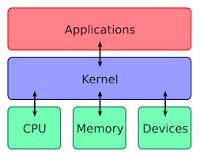

O que é um Kernel?
Em computação, o núcleo ou kernel é o componente central do sistema operativo da maioria dos computadores; ele serve de ponte entre aplicativos e o processamento real de dados feito a nível de hardware. As responsabilidades do núcleo incluem gerenciar os recursos do sistema.
